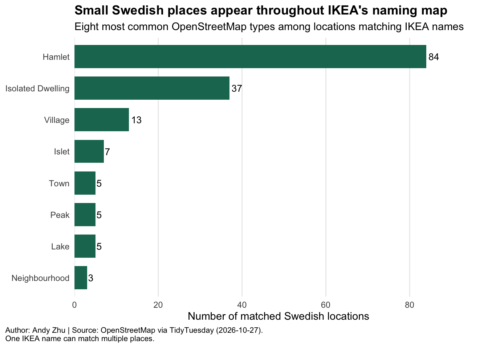
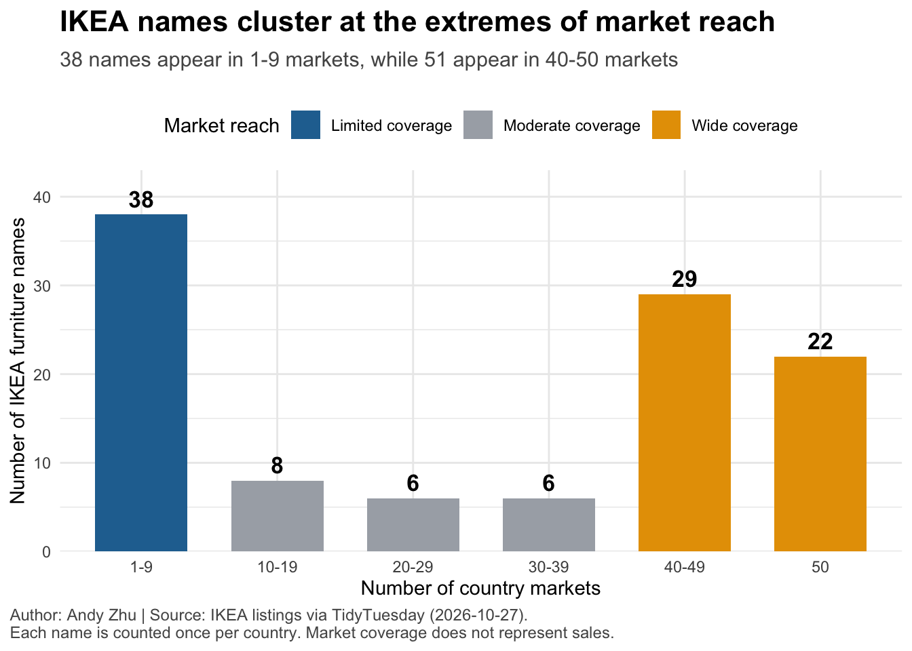
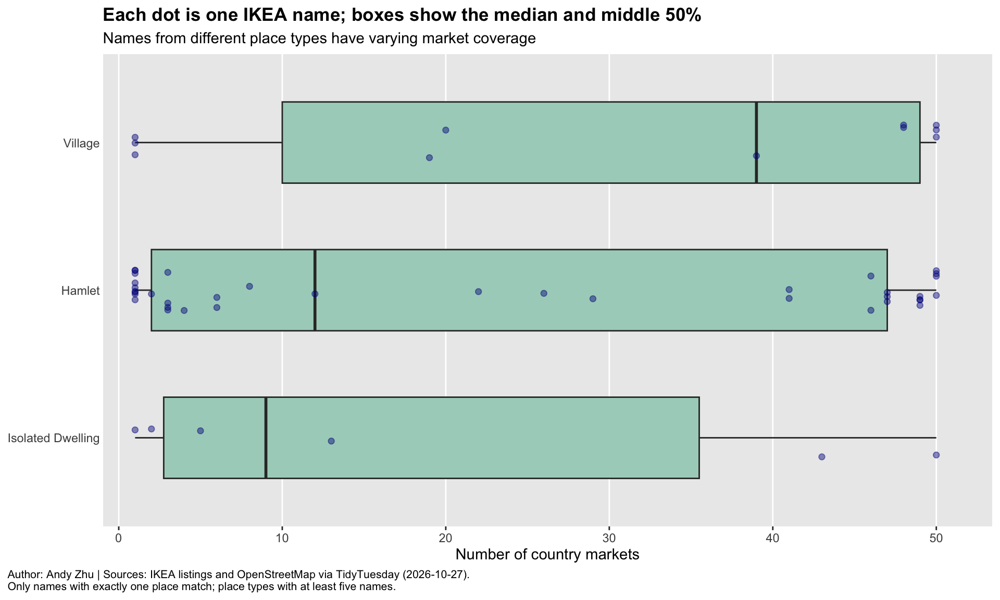

Homework 06
TidyTuesday Part (Optional)
You can count work on this week’s TidyTuesday toward the exceptional work.
Background
IKEA often uses Swedish place names for its sofas and armchairs. For example, EKTORP is a place near Stockholm and KLIPPAN is a town in southern Sweden. But the existence of a matching place does not prove that this location inspired a particular product name. 2026-10-27 TidyTuesday dataset combines product listings from IKEA websites in 50 countries, collected on September 28, 2026, with matching Swedish locations from OpenStreetMap. The can help us explore both the geographical character of the names and how widely those names appear in international IKEA markets.
Research question: What kinds of Swedish places share names with IKEA sofas and armchairs, and which IKEA names appear in the most country markets?
Code
[1] "name" "place" "municipality" "county" "place_type"
[6] "latitude" "longitude" "osm_id" [1] "country" "language" "category" "product_name" "name"
[6] "product_type" "item_no" "price" "price_usd" "currency"
[11] "variants" "url" Rows: 178
Columns: 8
$ name <chr> "AGEN", "AGEN", "AGEN", "AGEN", "AGEN", "ANGERSBY", "ARNÄ…
$ place <chr> "Agen", "Agen", "Agen", "Agen", "Agen", "Angersby", "Arnä…
$ municipality <chr> "Degerfors kommun", "Filipstads kommun", "Hällefors kommu…
$ county <chr> "Örebro län", "Värmlands län", "Örebro län", "Värmlands l…
$ place_type <chr> "neighbourhood", "lake", "lake", "hamlet", "bay", "hamlet…
$ latitude <dbl> 59.24096, 59.78168, 59.90467, 59.25029, 60.33954, 59.8046…
$ longitude <dbl> 14.43169, 14.12952, 14.54700, 14.18085, 13.89989, 13.2050…
$ osm_id <chr> "node/4730856392", "relation/2380259", "relation/8080868"…Rows: 15,393
Columns: 12
$ country <chr> "ae", "ae", "ae", "ae", "ae", "ae", "ae", "ae", "ae", "ae…
$ language <chr> "en", "en", "en", "en", "en", "en", "en", "en", "en", "en…
$ category <chr> "sofas", "sofas", "sofas", "sofas", "sofas", "sofas", "so…
$ product_name <chr> "GLOSTAD", "GLOSTAD", "KIVIK", "ÄPPLARYD", "EKTORP", "JÄT…
$ name <chr> "GLOSTAD", "GLOSTAD", "KIVIK", "ÄPPLARYD", "EKTORP", "JÄT…
$ product_type <chr> "3-seat sofa", "2-seat sofa", "3-seat sofa with chaise lo…
$ item_no <chr> "40573285", "50489012", "99482839", "09418051", "29509007…
$ price <dbl> 595, 495, 3095, 4495, 1795, 2500, 2995, 1395, 5995, 1300,…
$ price_usd <dbl> 162.01, 134.79, 842.75, 1223.96, 488.77, 680.74, 815.52, …
$ currency <chr> "AED", "AED", "AED", "AED", "AED", "AED", "AED", "AED", "…
$ variants <dbl> 0, 0, 3, 3, 3, 3, 1, 3, 1, 7, 3, 7, 3, 3, 1, 0, 3, 3, 1, …
$ url <chr> "https://www.ikea.com/ae/en/p/glostad-3-seat-sofa-knisa-d…Code
# A tibble: 2 × 4
dataset rows distinct_names missing_names
<chr> <int> <int> <int>
1 IKEA listings 15393 109 220
2 Swedish place matches 178 100 0Code
# A tibble: 1 × 2
markets missing_countries
<int> <int>
1 50 01: What kinds of Swedish locations match IKEA names?
Code
place_locations <- ikea_places |>
filter(!is.na(name), !is.na(place_type)) |>
distinct(name, place, municipality, county, place_type)
place_types <- place_locations |>
count(place_type, name = "locations", sort = TRUE) |>
slice_head(n = 8) |>
mutate(place_label = str_to_title(str_replace_all(place_type, "_", " ")))
place_types# A tibble: 8 × 3
place_type locations place_label
<chr> <int> <chr>
1 hamlet 84 Hamlet
2 isolated_dwelling 37 Isolated Dwelling
3 village 13 Village
4 islet 7 Islet
5 lake 5 Lake
6 peak 5 Peak
7 town 5 Town
8 neighbourhood 3 Neighbourhood Code
ggplot(place_types, aes(x = locations, y = fct_reorder(place_label, locations))) +
geom_col(fill = "#1A7660", width = 0.73) +
geom_text(aes(label = locations), hjust = -0.2, size = 3.5) +
scale_x_continuous(breaks = scales::breaks_pretty(n = 6), expand = expansion(mult = c(0, 0.16))) +
labs(title = "Small Swedish places appear throughout IKEA's naming map",
subtitle = "Eight most common OpenStreetMap types among locations matching IKEA names",
x = "Number of matched Swedish locations", y = NULL,
caption = "Author: Andy Zhu | Source: OpenStreetMap via TidyTuesday (2026-10-27).\nOne IKEA name can match multiple places.") +
theme_minimal() +
theme(panel.grid.major.y = element_blank(), panel.grid.minor = element_blank(), axis.ticks.y = element_blank(),
plot.title = element_text(face = "bold"), plot.caption = element_text(hjust = 0, size = 8), plot.caption.position = "plot")
Small Swedish settlements are the most common locations associated with IKEA furniture names. Hamlets have the highest count with 84 matched locations, followed by isolated dwellings with 37 and villages with 13. Other place types appear much less frequently. This suggests that IKEA’s naming system is strongly connected to small Swedish communities.
2: How widely are IKEA furniture names sold across countries?
Code
coverage_groups <- name_coverage |>
mutate(market_group = case_when(markets == 50 ~ "50", markets >= 40 ~ "40-49", markets >= 30 ~ "30-39", markets >= 20 ~ "20-29",
markets >= 10 ~ "10-19", TRUE ~ "1-9"),
market_group = factor(market_group, levels = c("1-9", "10-19", "20-29", "30-39", "40-49", "50"))) |>
count(market_group, name = "names") |>
tidyr::complete(market_group, fill = list(names = 0)) |>
mutate(category = case_when(market_group == "1-9" ~ "Limited coverage", market_group %in% c("40-49", "50") ~ "Wide coverage",
TRUE ~ "Moderate coverage"))
ggplot(coverage_groups, aes(x = market_group, y = names, fill = category)) +
geom_col(width = 0.68) +
geom_text(aes(label = names), vjust = -0.45, size = 4.5, fontface = "bold") +
scale_fill_manual(values = c("Limited coverage" = "#2470A0", "Moderate coverage" = "#A8ADB4", "Wide coverage" = "#E69F00"),
breaks = c("Limited coverage", "Moderate coverage", "Wide coverage"), name = "Market reach") +
scale_y_continuous(breaks = seq(0, 40, 10), limits = c(0, 43), expand = expansion(mult = c(0, 0))) +
labs(title = "IKEA names cluster at the extremes of market reach",
subtitle = paste("38 names appear in 1-9 markets,", "while 51 appear in 40-50 markets"),
x = "Number of country markets", y = "Number of IKEA furniture names",
caption = paste("Author: Andy Zhu | Source: IKEA listings via TidyTuesday (2026-10-27).",
"\nEach name is counted once per country.", "Market coverage does not represent sales.")) +
theme_minimal() +
theme(plot.title = element_text(face = "bold", size = 16, margin = margin(b = 8)),
plot.subtitle = element_text(size = 11.5, color = "#555555", margin = margin(b = 16)),
legend.position = "top",
plot.caption = element_text(size = 9, color = "#555555", hjust = 0),
plot.caption.position = "plot")
IKEA furniture names have different levels of international market coverage. Among the 109 names, 38 appear in only 1–9 country markets, while 22 appear in all 50 markets. This shows that some furniture names are widely used, while others are limited to fewer countries. This distribution shows two groups: names with low market coverage and names with very broad coverage. However, appearing in more countries does not mean a product has higher sales.
3: Does international reach differ by place type?
Code
single_match_names <- place_locations |>
add_count(name, name = "match_count") |>
filter(match_count == 1) |>
select(name, place_type) |>
distinct()
coverage_by_type <- single_match_names |>
inner_join(name_coverage, by = "name") |>
add_count(place_type, name = "type_n") |>
filter(type_n >= 5) |>
mutate(place_label = str_to_title(str_replace_all(place_type, "_", " ")))
type_summary <- coverage_by_type |>
group_by(place_label) |>
summarise(names = n(), median_markets = median(markets), .groups = "drop") |>
arrange(desc(median_markets), place_label)
type_summary# A tibble: 3 × 3
place_label names median_markets
<chr> <int> <dbl>
1 Village 11 39
2 Hamlet 37 12
3 Isolated Dwelling 6 9Code
ggplot(coverage_by_type,
aes(x = markets, y = fct_reorder(place_label, markets, .fun = median))) +
geom_boxplot(fill = "#A9D3C4", outlier.shape = NA, width = 0.55) +
geom_jitter(height = 0.14, width = 0, alpha = 0.45, color = "darkblue", size = 1.7) +
scale_x_continuous(breaks = scales::breaks_pretty(n = 6), expand = expansion(mult = c(0.04, 0.07))) +
labs(title = "Each dot is one IKEA name; boxes show the median and middle 50%",
subtitle = "Names from different place types have varying market coverage",
x = "Number of country markets", y = NULL,
caption = "Author: Andy Zhu | Sources: IKEA listings and OpenStreetMap via TidyTuesday (2026-10-27).\nOnly names with exactly one place match; place types with at least five names.") +
theme(panel.grid.major.y = element_blank(), panel.grid.minor = element_blank(), axis.ticks.y = element_blank(),
plot.title = element_text(face = "bold"), plot.caption = element_text(hjust = 0, size = 8), plot.caption.position = "plot")
This visualization compares international market coverage across three types of Swedish places that being named most frequently: villages, hamlets, and isolated dwellings. The distributions overlap considerably, and some names in each category appear in nearly all 50 markets. This suggests that place type may be related to market coverage, but it definitly does not fully explain the differences.
Conclusion: Overall, this analysis shows how IKEA furniture names connect Swedish geography with international markets. First visualization shows that many names are associated with mainly hamlets and isolated dwellings. Second visualization shows that market coverage varies considerably, with some names appearing in only a few countries and others appearing in every market. Third visualization suggests that names associated with villages tend to have higher median market coverage, although there is substantial variation within each place type.
Overall, the findings show that IKEA uses names connected to Swedish geography across markets with different levels of international coverage. Place type may be associated with these differences, but the data does not indicates a causal relationship. The analysis only measures product listings, so it cannot determine which names or products are the most popular among customers.
Explore the week’s TidyTuesday challenge. Develop a research question, then answer it through a short data story mainly composed of effective visualizations. Provide sufficient background for readers to grasp your narrative. Refer to the Homework Instructions ⭐ page on the course website for details on how to submit this part.